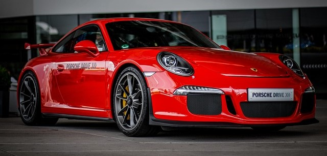
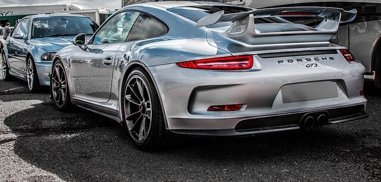

Porsche 911 gt2 rs
¿Cuánto corre el Porsche 911 GT2 RS? 340 km/h Porsche declara que logra una aceleración de 0 a 100 km/h (0 a 62 mph) en 2.8 segundos, de 0 a 200 km/h (0 a 124 mph) en 8.3 segundos y una velocidad máxima de 340 km/h (211 mph), pudiendo generar más de 400 kg (882 libras) de carga aerodinámica, con un peso total de 1470 kg (3241 libras). ¿Qué motor trae el Porsche GT2 RS? Motor y caja de cambios - El nuevo Porsche 911 GT2 rs, el motor de 3,8 l del 911 Turbo se integra en la primera división de motores de altas prestaciones. ¿Cuántos GT2 RS hay? Limitado a tan solo 30 unidades, el modelo se basa en el 911 GT2 RS Clubsport y está diseñado para dar lo mejor de sí en track days y competiciones sobre la pista. El vehículo que tenemos en imágenes se inspira en el 911 GT3 R de Manthey, conocido como 'Grello' debido a su distintivo color verde y amarillo.
Porsche 911 gt3 rs
¿Cuántos Porsche GT3 RS se fabricaron? Finalmente, Porsche fabricó 1036 ejemplares. Se lanzó por primera vez en 2003. Este atleta de élite lleva la competición en el ADN y demuestra todo su potencial tanto en el circuito de carreras como en las carreteras sinuosas.Rendimiento maximizado. Tan pronto como los semáforos dan la señal de salida, el nuevo 911 GT3 RS ofrece un rendimiento increíble en el circuito gracias a sus 465 Nm. 525 CV (386 kW) lo catapultan de 0 a 100 km/h en 3,2 segundos y le permiten disfrutar de una velocidad máxima de hasta 296 km/h sin descanso.
Acerca de nosotros
Porsche es un fabricante de vehículos de lujo que durante muchos años centró su atención en los deportivos de altas prestaciones. Fundada en 1931 en la ciudad alemana de Stuttgart, hoy día forma parte del Grupo Volkswagen. ¿Qué significa el nombre de Porsche? Así las cosas, el caballo rampante en el centro del escudo de Porsche procede del sello de Stuttgart. El nombre de la ciudad tiene su origen en la cría de caballos (“Stutengarten” es literalmente “jardín de yeguas” o yeguada). De esta forma, Porsche se identifica así con su hogar.